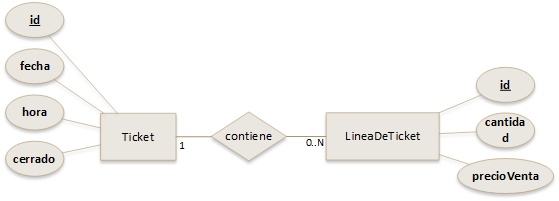

2.5.5.- Relaciones uno a muchos

Ahora toca la relación más habitual en cualquier modelo de datos. Teniendo en cuenta el apartado anterior, ¿cómo crees que se materializará la relación uno a muchos en nuestro modelo de datos JPA?
En la aplicación del mini punto de venta que tenemos entre manos hay dos situaciones donde se usan estas relaciones. Uno de esos casos es la relación entre LineaDeTicket y Ticket.
Empezaremos por ver cómo se materializa dicha relación en la entidad LineaDeTicket. Una línea de ticket estará asociada a un único ticket, pero además, un ticket podrá tener múltiples líneas de ticket, esto significa que habrá una relación muchos a uno entre LineaDeTicket (muchos) y Ticket (uno). En JPA tendremos que usar la anotación @ManyToOne para indicar dicha relación. Veamos como sería:
@Entity
public class LineaDeTicket implements Serializable {
// ... resto del código ...
@ManyToOne(optional = false)
private Ticket ticket;
// ... resto del código ...
}Esta relación por tanto se materializará también en un atributo, llamado ticket y de tipo la entidad Ticket, marcado con la anotación @ManyToOne. No es obligatorio poner el parámetro optional = false, pero aquí es conveniente ponerlo para indicar que siempre debe haber un ticket asociado a la línea de ticket. De esta forma, el atributo ticket anterior no podrá ser null en el almacén de datos.
Y ahora que hemos hecho esa parte de la relación (la parte de @ManyToOne), podemos completar el código de la entidad Ticket, donde habrá que poner una relación @OneToMany, dado que un ticket podrá tener multiples líneas de ticket. Lo haríamos de la siguiente forma:
@Entity
public class Ticket implements Serializable{
//... resto del código
@OneToMany(mappedBy = "ticket", orphanRemoval = true, cascade = CascadeType.PERSIST)
private List<LineaDeTicket> lineas;
//... resto del código
}Fíjate que ahora, como tipo del atributo se ha puesto List<LineaDeTicket>. Hay que poner una lista en este caso porque no habrá solo una línea de ticket, sino que habrá varias líneas asociadas a un mismo ticket. JPA usará esa lista para almacenar las líneas de ticket de cada ticket.
Como puedes ver en el ejemplo anterior, a la anotación @OneToMany se le han pasado tres parámetros. Dichos parámetros significan lo siguiente:
mappedBy = "ticket"que indicará el atributo de la otra clase participante en la relación (LineaDeTicket) que tiene la anotación@ManyToOne.orphanRemoval = truetiene el mismo significado que en la relación uno a uno vista en el apartado anterior. Si un ticket desaparece, sus líneas de ticket quedan huérfanas. Este parámetro hará que las líneas de ticket se borren de forma automática cuando el ticket asociado también se borre.cascade = CascadeType.PERSISTpermite que los cambios en cualquierLineaDeTicketde la listaList<LineaDeTicket>(tanto si añadimos una nueva línea de ticket, como si modificamos una ya existente), se guarden en la base de datos al guardar el ticket. De esa forma no tendremos que hacer dos operaciones por separado (guardar la línea de ticket y después el ticket), sino solamente una (guardar el ticket).
Ejercicio Resuelto

Queda una relación por modelar en nuestro modelo JPA, ¿te atreves?
Se trata de la relación entre Producto y LineaDeTicket. Esta relación es un poco especial, porque aunque es una relación uno a muchos (un producto estará en múltiples líneas de ticket), resulta que para un producto dado no es necesario saber en que líneas de ticket está.
Por tanto, para una línea de ticket si es necesario saber cuál es el producto que contiene, pero no al revés.
¿Qué piensas, esto simplifica nuestro modelo de datos o lo vuelve más complejo? ¿Cómo resolverías esto?
Debes conocer
A continuación tienes el código de las 4 entidades que componen el modelo de datos del minipunto de venta. Échale un vistazo, puede serte de utilidad:
Código completo de la entidad Producto. (java - 2.82 KB).
Código completo de la entidad LineaDeTicket. (java - 3.2 KB).
Código completo de la entidad DatosDeEnvio. (java - 4.57 KB).
Código completo de la entidad Ticket. (java - 6.98 KB).